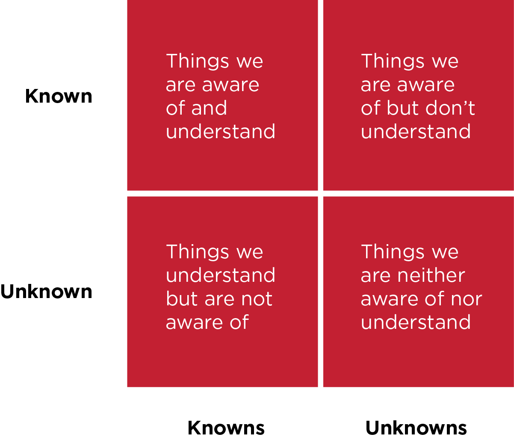

Unit 1, Outcome 1
1.4 - Describe The Risks That Might Impact Digital Projects
There are many risks that may impact digital projects, and these risks can lead to a project failing. A lack of risk management, or a failure to plan accurately for potential risks can be severely problematic in the development of a digital project. It is good practise to evaluate the risk potential as shown below.

Resources Risks
When creating a digital project, one of the risks can be the cost of resources. These costs may be too high, and may not have been budgeted for. Another potential issue is the required resources for the project not being available. If a digital project is being created by business, there may be the risk that necessary resources are reallocated, and therefore not available so the project cannot continue. There may also be copyright issues when it comes to the legal use of resources. This could cause disruption during the project, and lead to a project failure.
Budgeting Risks
Digital projects can be difficult to budget for, and often one of the biggest risks is the poor assessment of available budget. These costs can also increase with scheduling issues (when a project takes longer than accounted for, for example).
Scheduling and Staffing Risks
Another of the biggest risks when creating a digital product is an underestimation of the time available to complete tasks. This risk increases further still if tasks haven’t been identified properly in advance of the development stage. Another potential risk is staffing numbers being too low. There may not be enough staff to begin with, or staff may leave during the project.
Performance Risks
Performance is another area with associated risks. Results may not be consistent with design specifications, which can cause delay in the project and increase costs. Staff may not have the relevant skills, or access to the information needed to create the digital project. This could incur more costs if staff need further training, and also add more time constraints. It could also result in content not being produced on time which is also a risk for project failure.
Governance
Artistic vision can often change or get off track if there’s too many people making project decisions. If the decisions that need to be made rely on a lot of board members, this can also slow down the timeline and add more costs, which may result in project failure.
Strategic Risks
There may have been strategic decisions made that end up conflicting with the digital project. Chosen technology may not work with the project and software may not function the way you thought it might. This could create risks for the digital project.
Operational Risks
During digital projects, risks encountered could include issues with product production and distribution of the digital product. These risks could increase costs and time taken to complete the project.
Market Risks
If competition in the market isn’t properly researched and assessed, then marketing strategies may fail which could lead to product failure. Another risk could be that the correct research hasn’t been conducted to evaluate an audience need for the digital project.
Legal Risks
Legal issues can be a risk to digital products if copyright and GDPR laws aren’t followed correctly. These risks increase further if the person or company producing the digital product doesn’t seek legal advice.
External Hazard Risks
There are many external hazards that could lead to digital product failure. These could include internet failure, extreme weather, vandalisation and theft. [14] [15] [16] [17]